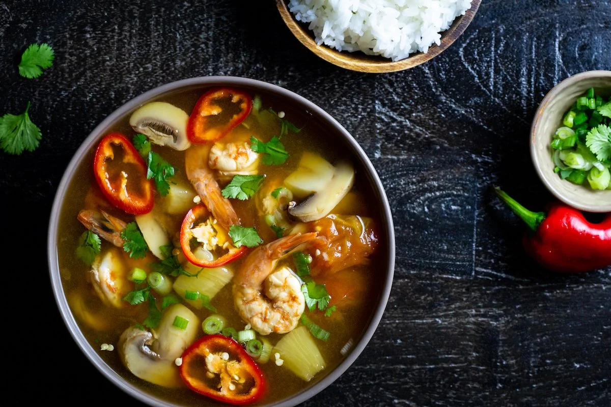

Discover the Flavors of Thailand
Tom Yum Goong is a classic Thai soup renowned for its bold flavors and aromatic spices. This hot and sour soup features a tantalizing blend of lemongrass, galangal, and kaffir lime leaves, combined with succulent shrimp.
Preparation time
- Total: Approximately 20 minutes
- Preparation: 10 minutes
- Cooking: 10 minutes
Ingredients
- 2 stalks Lemongrass
- 1 cup Thai basil
- 3 leaves Kaffir Lime Leaves
- 500g Shrimp
- Fish sauce, lime juice, and chili paste to taste
Instructions
- Simmer the broth: Bring broth to a low boil for 10 minutes.
- Add aromatics: Stir in lemongrass, galangal, and kaffir lime leaves.
- Cook the shrimp: Add shrimp and cook until pink.
- Season to taste: Adjust flavor with fish sauce, lime juice, and chili paste.
- Garnish and serve: Top with Thai basil and serve hot.